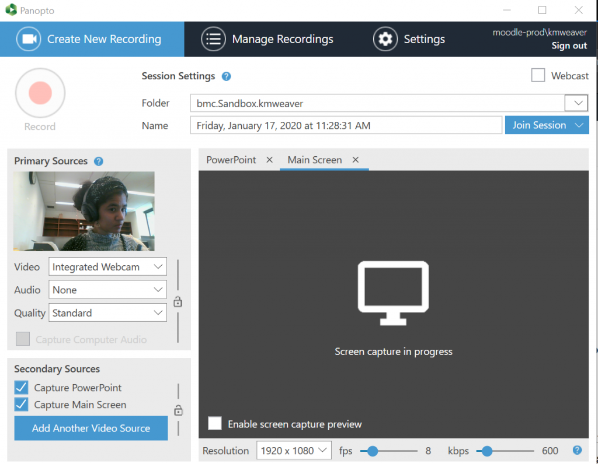
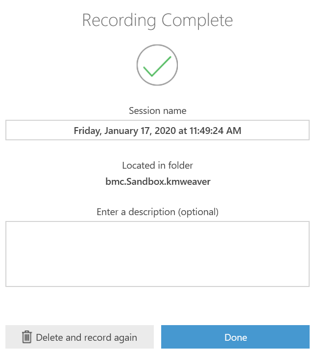

Bryn Mawr subscribes to a lecture capture service called Panopto, which is designed
to make it easy for people to record lectures and talks and post the recordings for
others to view them. Panopto can simultaneously capture audio and video of a person
lecturing and a screencast of
what they project overhead from the podium computer during a lecture. Recordings are automatically
uploaded to Panopto's servers and can be shared with students via a course Moodle site or with
viewers outside of a course via a public link. Want to
record off campus or outside of the classroom? Check out this tech doc to learn more!
Getting Ready to Record
Not all rooms are equipped for lecture capture. If you need to record a talk or classes,
be sure to schedule the event or the course in a room that is:
-
Go to the
Technology Enhanced Classrooms web page.
-
Look up your building.
-
Find a room that has a "Lecture Capture Camera" in the listing under
Cameras/Mics
.
Most lecture-style classrooms are equipped for lecture capture. Seminar style classrooms and
meeting rooms typically are not set up for lecture capture.
You will also need to have to have a Teacher role in a Moodle site in order to record
lectures. (Any Moodle site will do, it doesn't have to be an academic course-related site.)
If you don't have one already, please e-mail help@brynmawr.edu.
Starting a Recording
-
Turn on the classroom computer and log in.
-
Open any applications and diles that you will use to during your lecture. For example,
if you wanted to show PowerPoint slides, a web page, and an image in a PDF document, you would open
your PowerPoint file, your web browser, and the PDF file.
Note:
Panopto will use all of the RAM, cache space, and processing power available when
it is launched. Opening your presentation materials before opening Panopto ensures that
computer resources are reserved for those processes.
-
Launch the Panopto recorder, of which tehre are two options to do so. You can either:
1) open the Panopto desktop app that is installed on all campus computers or 2) login to
Bryn Mawr's
online Panopto platform.
-
Launch Option 1: Opening the Panopto Desktop App (Note: This option works best on a PC classroom computers)
-
Double-click on the desktop Panopto icon (a green circular ribbon with a blue arrow inside it,
below) in a system tray (PC)
-
If prompted to log in use your normal Bryn Mawr username and password.
If you are not prompted and someone else's name is listed in the top right hand corner of the recorder window
(e.g. "moodle-prod.acoll"), click
Sign out,
and then log in.
-
Launch Option 2: Visit Bryn Mawr's
online Panopto platform
(Note: This option works best on Mac classroom computers)
-
Open the website and log in with your Bryn Mawr credentials. Click on the blue
Create button and select Record a new session
from a drop-down list. (which also includes these options: "Panopto Capture-Beta","Upload Media"
"Webcast", "Scheduled Recording", "Build a session", "Playlist", and "New Folder").
-
For another browser-based option on classroom Mac computers, you can also use
Panopto Capture
(see this
Tech Doc
for more information)
-
Choose the course you are recording to/for from the drop-down
Folder
menu at the top of the page.
-
Give the recording a
Name
or use the default (recording day, date, and time).

-
Check the audio levels by speaking and watching the microphone bar:
-
Move the slider bar to increase or decrease volume as needed.
-
If nothing shows up in the audio level window, click Settings
and try different options on the Default audio source menu until you
find one that works. Call (x7440) or email the Help Desk
if none do.
-
Check the video settings:
-
Be sure the Instructor Video box is checked.
-
You should see the camera feed in the window above the checkbox.
-
If no video appears or the camera isn't pointed where you need it,
click Settings and try a different Default video source
or reposition the camera using the onscreen controls. Call (x7440) or email
the email the Help Desk if none of the
sources work.
-
Panopto automatically records a screencast of what is presented on the recording computer.
You do not need to do anything to endable this and you cannot turn this off.
-
When you are finished with set up, click Record to start recording.
Note: in many rooms, the video camera mounted in the ceiling is the only
audio input source. In these cases, you will need to enable Instructor Video
in order to record audio even if you only wanted a narrated screencast.
For more detailed information, including how to use on-screen features during a recording,
see Panopto's guide on How to Record a Video
and Best Practices for Recording.
Stopping and Uploading the Recording
-
To end a recording, click Stop in the Desktop app.
-
In the dialog box that appears, choose Done to upload the recording
to the Panopto server for precessing and streaming.
Stopping and Uploading the Recording
-
To end a recording, click Stop in the Desktop app.
-
In the dialog box that appears, choose Done to upload the recording to the Panopto
server for processing and streaming.

-
Lock the computer (Windows) or put it to sleep (Mac), but
do not turn it off.
The recording will finish uploading in the background as long as the computer remains
on and connected to the Internet. (Even if you log out and another user logs in.)